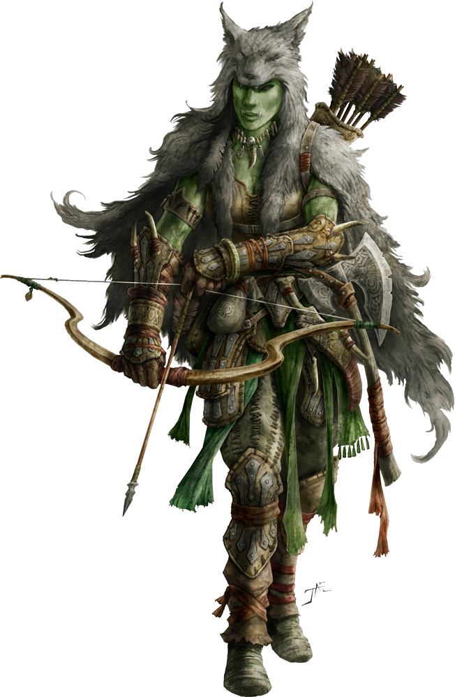

Explorador
Humanoide mediano (cualquier raza), cualquier alineamiento
Armadura 13 (armadura de cuero)
Puntos de vida 16 (3d8 + 3)
Velocidad 30 pies
| FUE | DES | CON | INT | SAB | CAR |
|---|---|---|---|---|---|
| 11 (+0) | 14 (+2) | 12 (+1) | 11 (+0) | 13 (+1) | 11 (+0) |
Habilidades Naturaleza +4, Percepción +5, Esconderse +6, Supervivencia +5
Sentidos Percepción pasiva 15
Idiomas Un lenguaje cualquiera(normalmente común)
Desafío 1/2 (100 XP)
Vista y oido agudos. El explorador tiene ventaja en tiradas de Sabiduría (Percepción) que dependan de la vista o el oido.
Acciones
Multiataque. El explorador realiza dos ataques a melee o dos ataques a distancia
Espada corta. Ataque con arma de mele: +4 a golpear, alcance 5 pies, un objetivo. Golpe: 5 (1d6 + 2) daño perforante.
Arco largo. Ataque con arma a distancia: +4 a golpear, rango 150/600 pies, un objetivo. Golpe: 6 (1d8 + 2) daño aplastante
